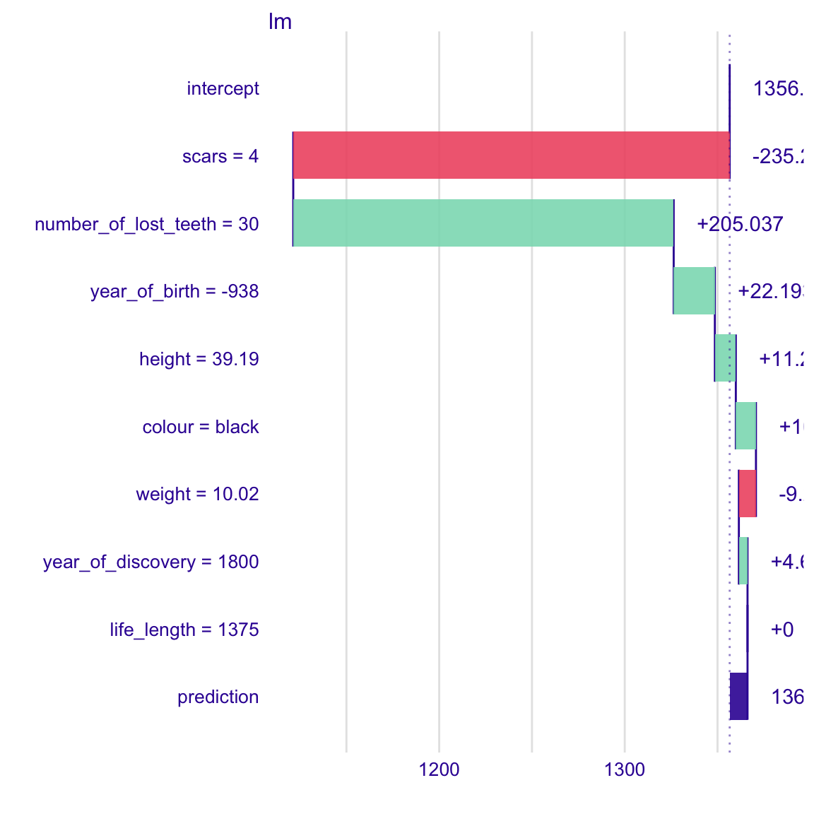
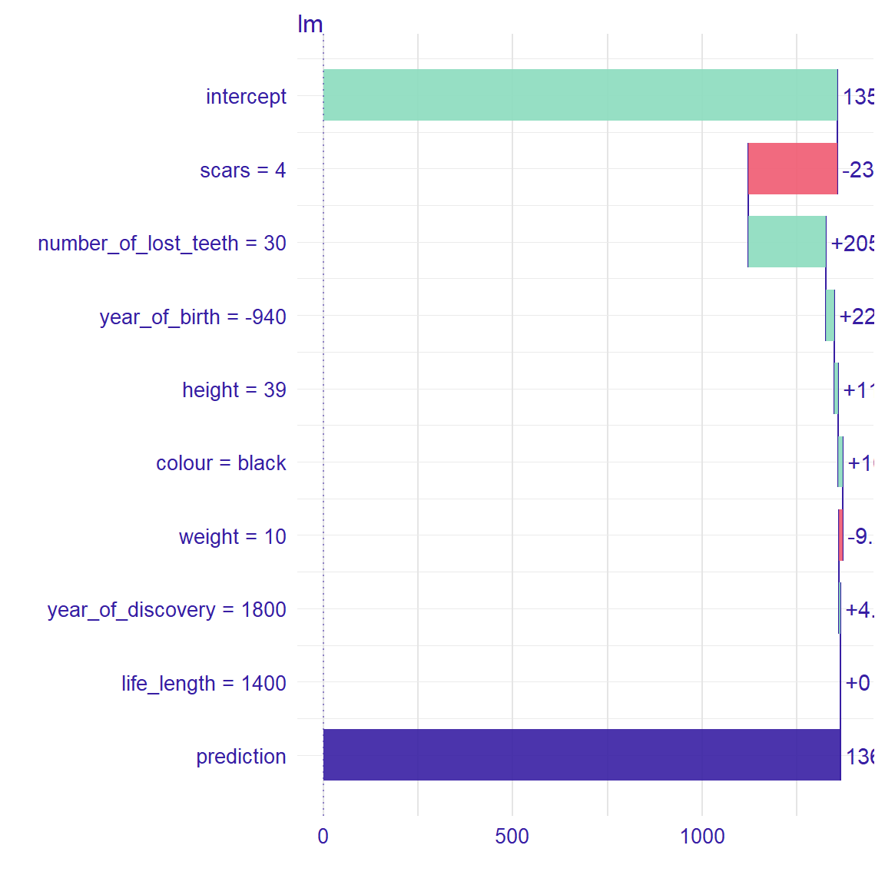
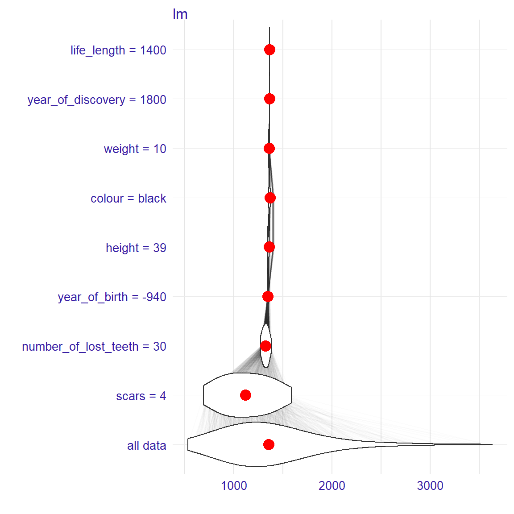
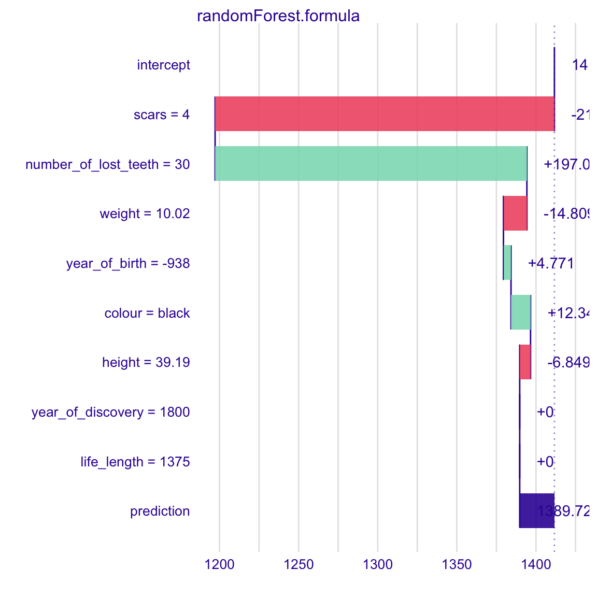
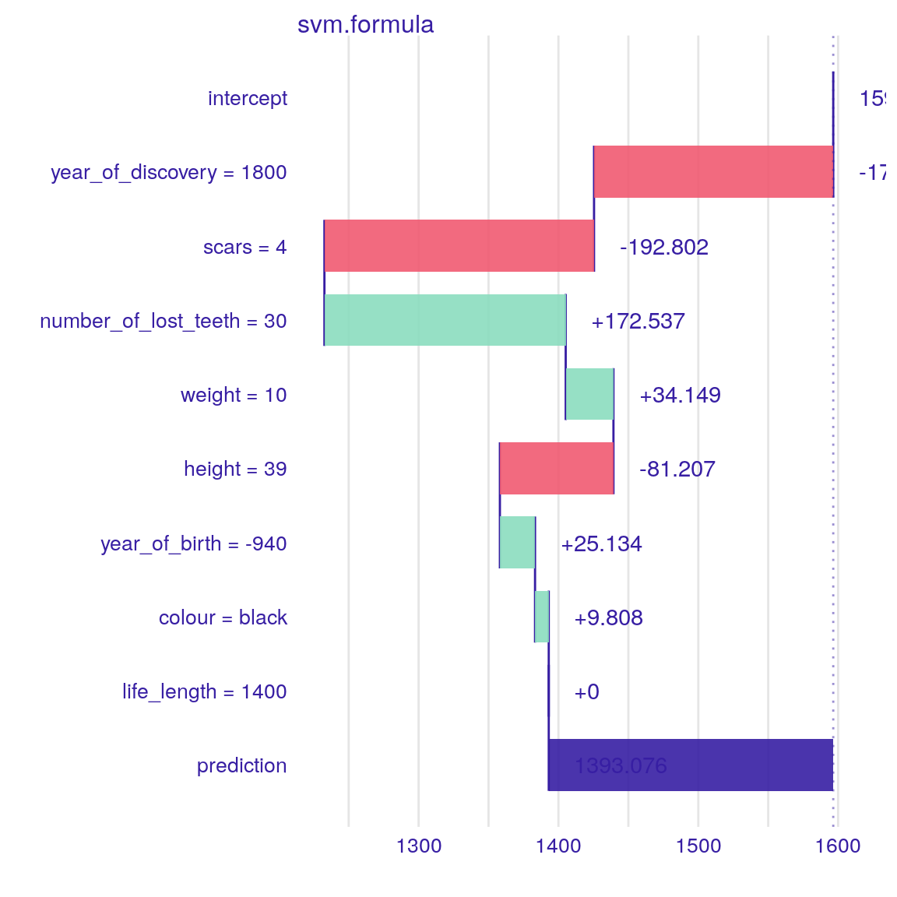
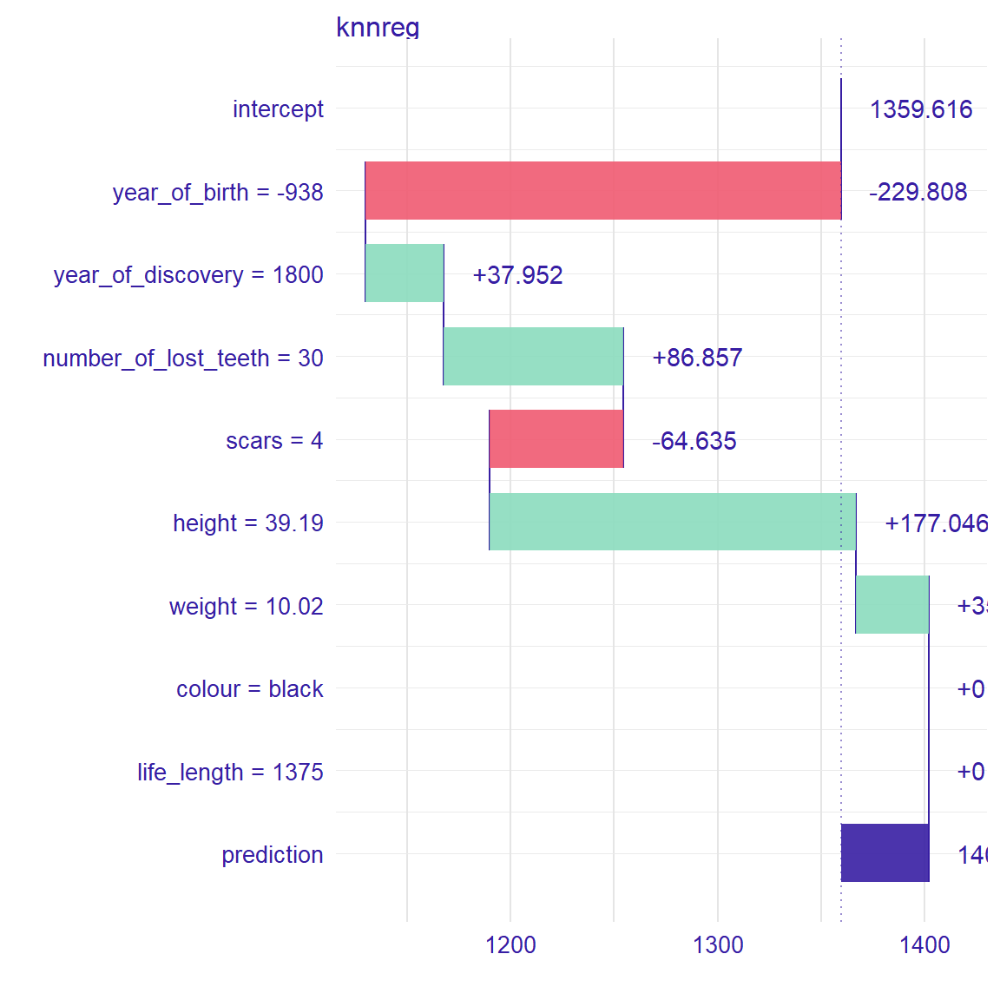
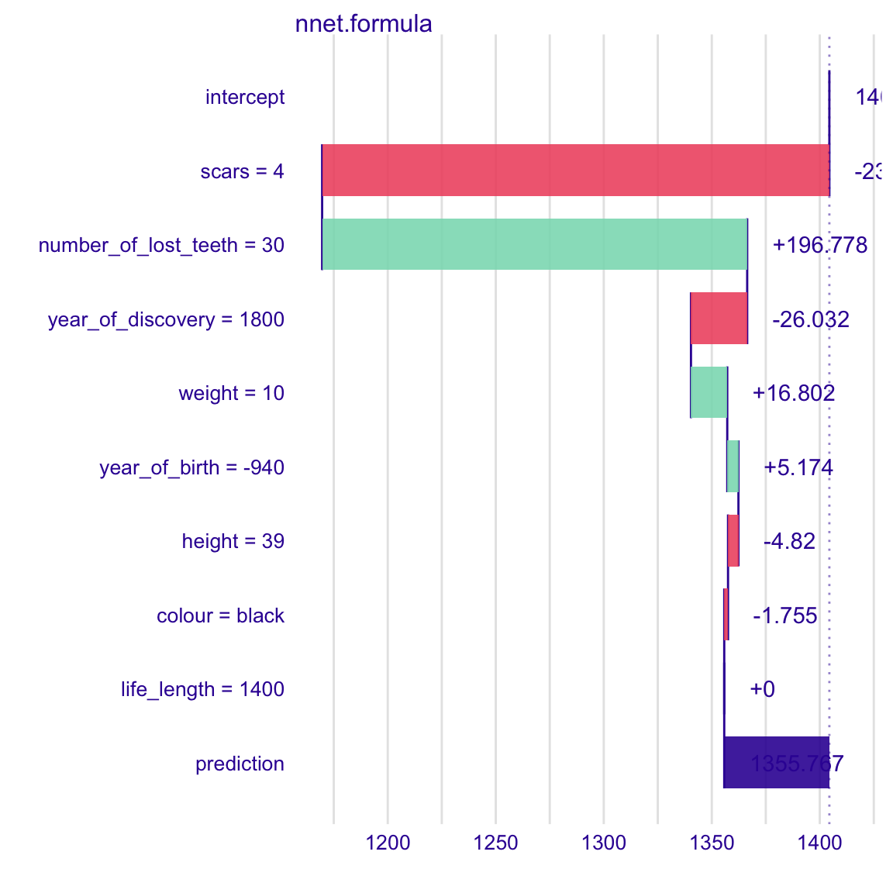

vignettes/vignette_iBreakDown_regression.Rmd
vignette_iBreakDown_regression.RmdHere we will use the dragons data from DALEX package to present the iBreakDown for regression models.
#> year_of_birth height weight scars colour year_of_discovery
#> 1 -1291 59.40365 15.32391 7 red 1700
#> 2 1589 46.21374 11.80819 5 red 1700
#> 3 1528 49.17233 13.34482 6 red 1700
#> 4 1645 48.29177 13.27427 5 green 1700
#> 5 -8 49.99679 13.08757 1 red 1700
#> 6 915 45.40876 11.48717 2 red 1700
#> number_of_lost_teeth life_length
#> 1 25 1368.4331
#> 2 28 1377.0474
#> 3 38 1603.9632
#> 4 33 1434.4222
#> 5 18 985.4905
#> 6 20 969.5682#> year_of_birth height weight scars colour year_of_discovery
#> 1 -938 39.18619 10.02391 4 black 1800
#> number_of_lost_teeth life_length
#> 1 30 1375.38First, we fit a model.
To understand the factors that drive predictions for a single observation we use the iBreakDown package.
Now, we create an object of the break_down class. If we want to plot distributions of partial predictions, set keep_distributions = TRUE.
bd_lm <- local_attributions(m_lm,
data = dragons_test,
new_observation = new_observation,
keep_distributions = TRUE)We can simply print the result.
#> contribution
#> lm: intercept 1356.562
#> lm: scars = 4 -235.221
#> lm: number_of_lost_teeth = 30 205.037
#> lm: year_of_birth = -938 22.193
#> lm: height = 39.19 11.296
#> lm: colour = black 10.856
#> lm: weight = 10.02 -9.217
#> lm: year_of_discovery = 1800 4.668
#> lm: life_length = 1375 0.000
#> lm: prediction 1366.174Or plot the result which is more clear.

Use the baseline parameter to set the origin of plots.

Use the plot_distributions parameter to see distributions of partial predictions.

For another types of models we proceed analogously. However, sometimes we need to create custom predict function (see nnet example).
library(randomForest)
m_rf <- randomForest(life_length ~ . , data = dragons)
bd_rf <- local_attributions(m_rf,
data = dragons_test,
new_observation = new_observation)
head(bd_rf)#> contribution
#> randomForest.formula: intercept 1414.803
#> randomForest.formula: scars = 4 -218.434
#> randomForest.formula: number_of_lost_teeth = 30 201.378
#> randomForest.formula: year_of_birth = -938 7.847
#> randomForest.formula: weight = 10.02 4.258
#> randomForest.formula: colour = black 4.091
library(e1071)
m_svm <- svm(life_length ~ . , data = dragons)
bd_svm <- local_attributions(m_svm,
data = dragons_test,
new_observation = new_observation)
plot(bd_svm)
library(caret)
m_knn <- knnreg(life_length ~ . , data = dragons)
bd_knn <- local_attributions(m_knn,
data = dragons_test,
new_observation = new_observation)
plot(bd_knn)
When you use nnet package for regression, remember to normalize the resposne variable, in such a way that it is from interval \((0,1)\).
In this case, creating custom predict function is also needed.
library(nnet)
x <- max(abs(dragons$life_length))
digits <- floor(log10(x))
normalizing_factor <- round(x, -digits)
m_nnet <- nnet(life_length/normalizing_factor ~ . , data = dragons, size = 10, linout = TRUE)#> # weights: 111
#> initial value 101.265812
#> iter 10 value 32.757567
#> iter 20 value 27.203260
#> iter 30 value 26.909728
#> iter 40 value 25.485713
#> iter 50 value 13.524120
#> iter 60 value 10.135449
#> iter 70 value 5.432241
#> iter 80 value 1.486816
#> iter 90 value 0.538876
#> iter 100 value 0.276472
#> final value 0.276472
#> stopped after 100 iterationsp_fun <- function(model, new_observation){
predict(model, newdata = new_observation)*normalizing_factor
}
bd_nnet <- local_attributions(m_nnet,
data = dragons_test,
new_observation = new_observation,
predict_function = p_fun)
plot(bd_nnet)